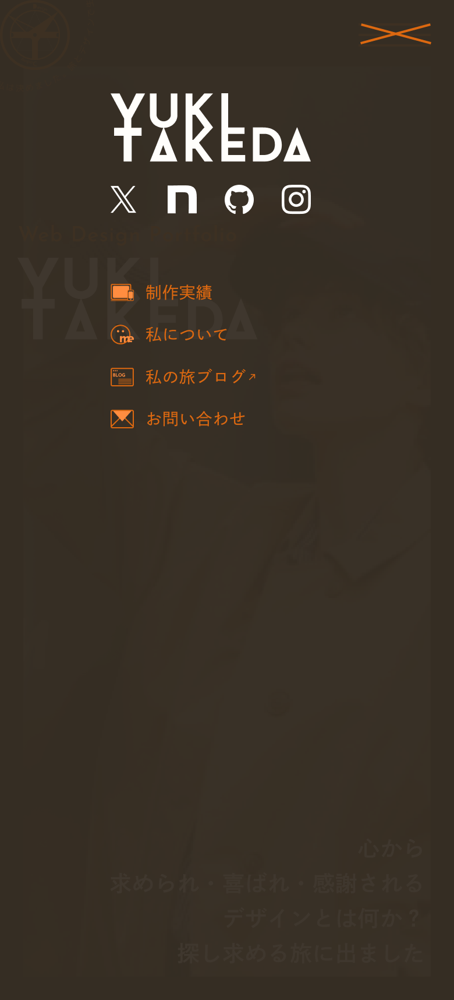
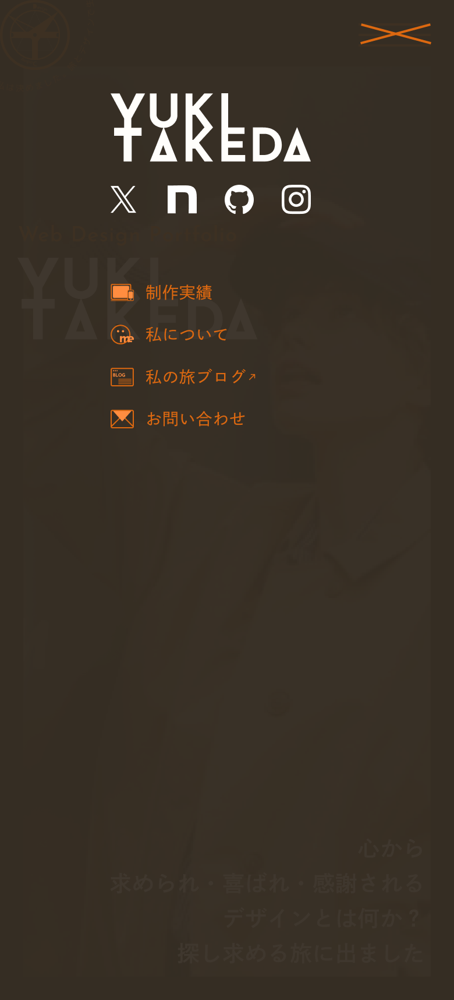

Web Site
ポートフォリオ
自主制作
-
事業内容
デザイナー転職向けのポートフォリオ
-
担当役割
Design / Coding
-
サイトURL
https://yuki-takeda.com
採用者目線での
読み心地を意識した
デザイン転職向け
ポートフォリオ
デザイナーになるためにデザイン制作会社への転職を目指している私自身のポートフォリオを制作いたしました。採用者の方々が見るときの気持ちを最優先に考えて設計を行いつつ、私らしさが全面に伝わるサイトを目指し制作しました。
-
ターゲット
デザイン制作会社の採用担当者
転職を希望する制作会社先の現場で活躍するデザイナーやエンジニアなどのメンバー
-
制作目的
希望する制作会社への転職を実現するため
制作会社の方々に私自身の評価をいただき、会社内に必要な人材であるかを判断いただくため
-
課題
デザイナーの実務未経験であること
私の日々のデザイン学習の取り組みを可視化するツールが存在していないこと
-
課題に対して意識したこと
デザイナーの実務未経験であるからこそ、スタイリングのみに執着せず、1つ1つのデザインに対する言語化や「なぜ」の問いかけの習慣化を行い、伝わるデザインを目指して制作しました。
制作実績だけでは日々のデザイン制作に対するプロセスを十分に伝えられないという課題に対し、他ツールを通じてプロセスを証明できるようnote・GitHub・Xなどのアカウントリンクをメニューやフッターに配置しました。また、趣味で運用中の旅ブログをヘッダーやフッターから「私の旅ブログ」経由で遷移できるようにし、外部ツールへの導線設計にもこだわりました。
-
制作期間
企画 / WF
2週間
デザイン
1.5ヶ月間
コーディング
3週間
-
情報設計
ポートフォリオのターゲットは普段膨大な業務を兼任されている採用担当者の方々や現場メンバーの方々となるため、読み進めやすさや見やすさを最重要に考えて制作しています。
どのようなレイアウト、文字サイズ、余白感だと閲覧する労力を抑えられるのか、瞬時に見せたい情報が頭に入ってくるのかを第三者目線で都度確認を行ったり、友人や家族などに実際のサイトを見てもらった上で意見をいただき、再設計・修正を行いました。
-
デザインコンセプト
読みやすさや見やすさだけに重視すると個性のないポートフォリオとなってしまうため、2つのコンセプトとデザインテーマを決めてポートフォリオの世界観を決めました。「関わる全ての人々から求められ、喜ばれ、感謝されるデザイナーになりたい」という私のデザインに対する大きな目標・想いをメインコンセプトに、「人生も、デザインも、旅と同じ」という私の趣味である旅をデザインにかけたデザインの面白さをサブコンセプトに掲げました。2つのコンセプトを基に「心から求められ・喜ばれ・感謝されるデザインとは何か？探し求める旅」というデザインテーマを掲げて制作しています。
コンセプトとテーマを基に3つの世界観を決めました。実務で通用するデザイナーになる！という想いから「プロ感」、メインコンセプトを連想する「楽しさ・喜び」、サブコンセプトで掲げたデザインという旅を連想できるよう「旅行雑誌感」を融合させた世界観を目指してデザインしています。
-
デザイン詳細
配色選定では、ベースカラーとして自分の性格である「素直さ」を表現したクリーム色、メインカラーとしてプロのデザイナーを目指す「プロ感」・「デザインという旅路」を表現し明度を抑えた茶色、アクセントカラーとしてメインコンセプトの目標に向けて「向上心高く挑戦したい」という想いを込めてオレンジを選定しています。彩度が高いオレンジはベース・メインカラーのどちらとも相性が良く、固定しているヘッダーナビゲーションの可読性を保っています。
フォント選定や素材制作は、「心から求められ・喜ばれ・感謝されるデザインとは何か？探し求める旅」というデザインテーマを主軸にして制作しています。
私のデザインに対する目標達成には、幾度もの高い山を登る必要があると考えています。「旅の中で遭遇する山々や広大な大地を楽しみながら進む冒険」を連想できるような幾何学的で躍動感・冒険心をくすぐる「Josefin Sans」を見出しやタイトルに使用しました。また、小見出しや本文には「旅行雑誌感」をだすため、印刷物に特化したフォントを検討しました。その中でも印刷会社が長年開発・運用している「DNP Shuei Gothic Gin Std」を使用し、可読性・信頼性・雑誌感・プロっぽさの融合性を取り入れています。
素材制作に関しては、「旅の中で遭遇する山々や広大な大地を楽しみながら進む冒険」に必要なグッズを連想して制作しました。全てにおいて、冒険心をくすぐる幾何学的な世界観に統一して制作しています。
-
学びや反省点
正直、ポートフォリオのデザイン制作が1番難しく苦戦しました。理由としては商材が私自身である点にあると考えています。自分を売り込むために自分らしさを全面に押し出したポートフォリオを制作したいと考えてしまいますが、それだけだと良くわからないポートフォリオが完成してしまう。だけど、採用者目線で考えて作っただけのポートフォリオだと全く特徴・個性のないポートフォリオが完成してしまう。このバランスをどのように考慮し、採用担当者や現場メンバーの方々に響く、自分のデザインの想いがサイトから伝わるポートフォリオになるのかで迷走してしまいましたが、非常に良い経験だったと思っています。
今回制作したポートフォリオがどのような評価になるのかはまだわからないですが、スクールのトレーナーやデザインイベントでお会いした方々からのご支援によって、ポートフォリオの見直しを行い、デザイン制作するにあたっての見方が変わったと思っています。
反省点を踏まえ、1つ1つのセクションにおいて、なぜこのレイアウト、余白、文字間、サイズ感で設計し、なぜこの写真やフォント、配色を使用するのか、1つ1つ細かく自問自答を繰り返しリデザインを行いました。まだまだ気付けていない点もたくさんあると思いますが、色々な方からのアドバイスやご指摘を今後も大切にしつつ、世に溢れているたくさんの良いデザインを探し出し、分析し、自分のデザインスキルとして取り入れられるように日々デザインの旅をしていきたいと思っています。


 
